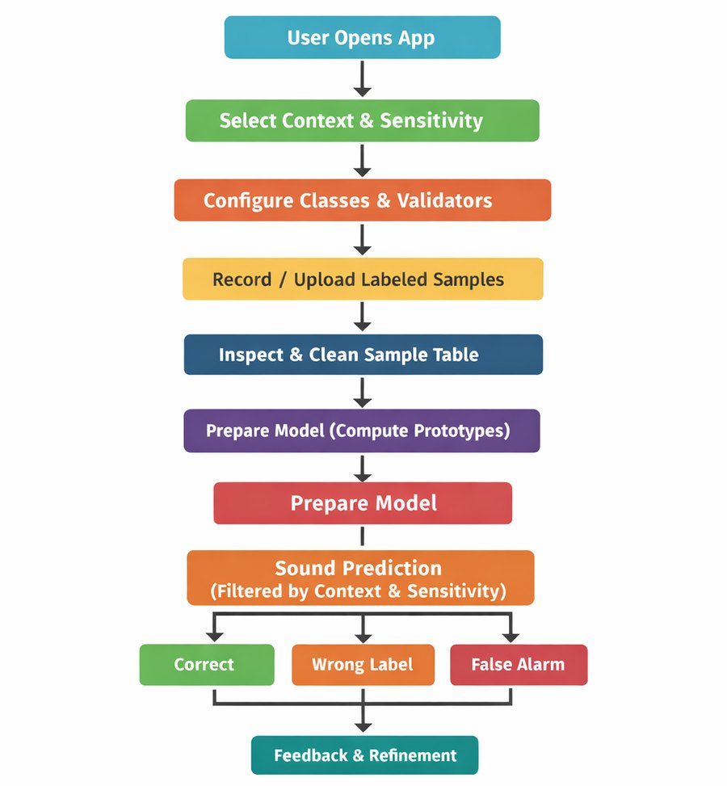
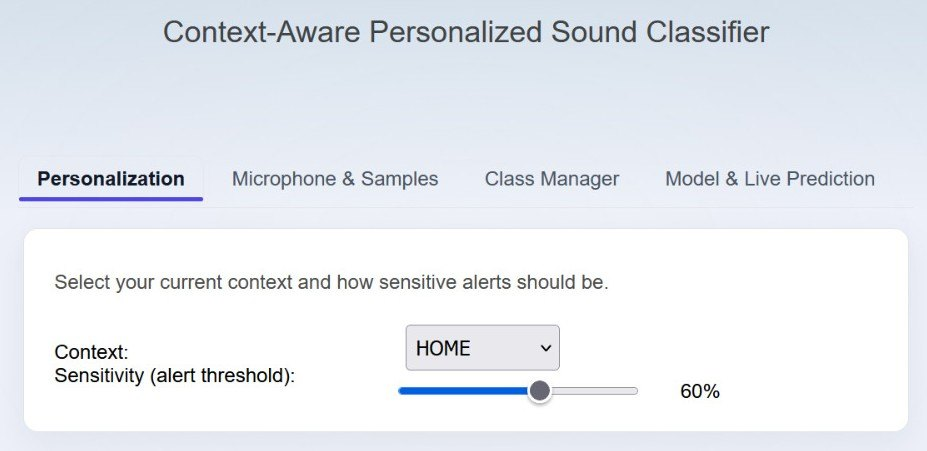
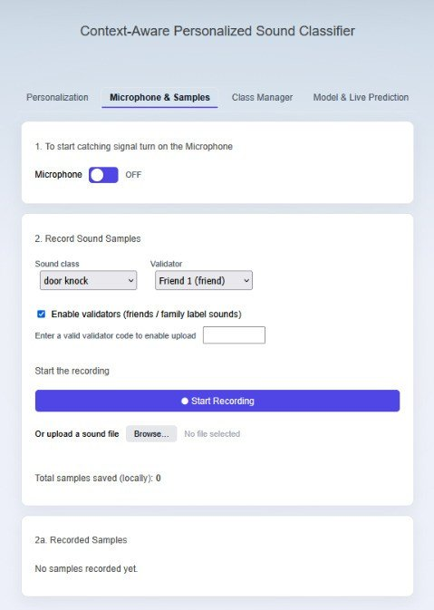
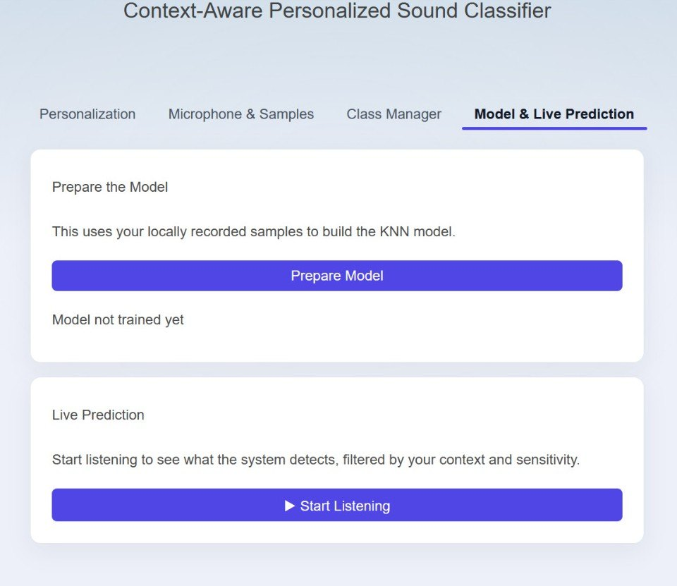

01 · The gap
Off-the-shelf recognisers do not know your home
Environmental sound recognition can help a Deaf or Hard-of-Hearing person keep track of things they cannot hear directly: a door knock, an alarm, a baby crying, someone calling their name. Commercial systems do this with a fixed, pre-trained model. It does not know which door in this house, which alarm, or which of these sounds actually matters to this person right now, so alerts get missed or arrive when they are not wanted.
The fix we chose is not a bigger model. It is handing the controls to the people who know the home: the DHH user, and the friends or family who help set up their assistive tech.
Can a DHH user and their trusted circle shape a sound recogniser to their own home and priorities, and come to trust its alerts, without touching any machine learning?
02 · The idea
Interactive machine learning, two roles
In interactive machine learning the training loop lives inside the interface: the user collects the data, triggers the training, and audits what the model says, rather than treating it as a black box. We split that work across two roles.
The primary user
The DHH person. Decides which sounds to track, turns classes on or off per context, sets the alert sensitivity, and reacts to live predictions. Assumed non-technical.
The validators
Friends and family. Record and label sound samples, check predictions, and correct mistakes. They sign in with a PIN so only trusted people can change the training data.
Everything runs client-side. Audio, samples and the model stay in the browser; there is no server and no pre-trained dataset. That keeps a stream of a person's home audio off the network entirely.
03 · How it works
Set up, collect, train, then a live loop
The flow is linear to set up and then circular in use. The user picks a context and sensitivity, classes and validators get configured, validators record labelled samples and clean the table, the system computes one prototype per class locally, and then live prediction runs with structured feedback feeding back into the data.

04 · The controls
Four tabs, one per stage
The interface is split into four tabs (Personalization, Microphone & Samples, Class Manager, Model & Live Prediction) so nobody sees every control at once. The DHH user mostly lives in personalisation and live prediction; validators spend their time in recording and class management.
Context and sensitivity
The user picks their current context from a short list, then sets a single sensitivity slider. A continuous slider, not presets, lets a non-technical person feel out the trade-off between missed sounds and false alarms and nudge it in small steps.

Which sounds, in which context
The Class Manager is a table: sound classes down the side, contexts across the top, a checkbox at each crossing. Door knock at home and university but not at night; baby cry at night but not on campus. Context becomes something you can see and set, not an opaque input to the model.
Recording, and who is allowed to
Validators authenticate with a PIN tied to their role, then record from the mic or upload a file and assign a label. The sample table can be played back, pruned of bad recordings, and relabelled. The dataset starts empty and stays small on purpose, roughly five to ten examples per class, growing to fit the home over time.

05 · Under the hood
A small, legible classifier
Audio comes in through the Web Audio API: eight frames of FFT data, the first 40 frequency bins, converted to linear magnitude, log-compressed, normalised to zero mean and unit variance, then averaged into one feature vector. Lightweight, and interpretable enough to reason about.
Instead of comparing every stored sample, the classifier keeps one prototype per class, a mean and a per-dimension variance, and scores a new sound by its variance-weighted distance to each. It also refuses to answer when it is unsure: a prediction only shows if it clears the sensitivity threshold and beats the runner-up class by a margin. Combined with the per-context activation, the same model behaves differently in each situation.

Feedback on a live alert is handled asymmetrically. "Correct" and "false alarm" are logged with a timestamp, label, confidence and context but do not touch the model. "Wrong label" opens a relabel step, and the corrected sample is added to the dataset, ready for the next manual retrain.
06 · The evaluation
A study designed around control and trust
The brief asked for a human-centered evaluation method, not a finished study, so this is the design rather than results. It deliberately does not chase raw accuracy. The questions are whether the interactive controls give people a sense of agency, and whether they come to trust the alerts.
- RQ1. Does per-context activation of sound classes increase perceived control over alerts?
- RQ2. Does structured feedback on live predictions build trust across successive interaction cycles?
- RQ3. How do people actually appropriate the personalisation features when building their own recogniser?
The plan: 4 to 6 DHH participants, each with a validator, run through four phases, class and context setup, data collection, live testing, then interview and questionnaires. Behavioural measures cover classes per context and the mix of feedback types over time; subjective measures use 7-point items for perceived control and trust, plus a short NASA-TLX subset for workload.
07 · Limits and next
An honest prototype
- Data and models live in browser memory only. Nothing survives a refresh or moves between devices.
- The dataset is small and sparse, so it will not generalise well to messy real-world conditions.
- Feedback does not retrain anything automatically. The user has to click Prepare Model again.
- The evaluation is designed but not run, and it is lab-scale.
Next
Add a datastore so setups persist and can be shared across a household, turn feedback into automatic incremental updates and active-learning prompts when the model is unsure, compare pre-trained audio embeddings inside the same interactive pipeline, and add haptic alerts on a phone or watch for when a screen is not in view.